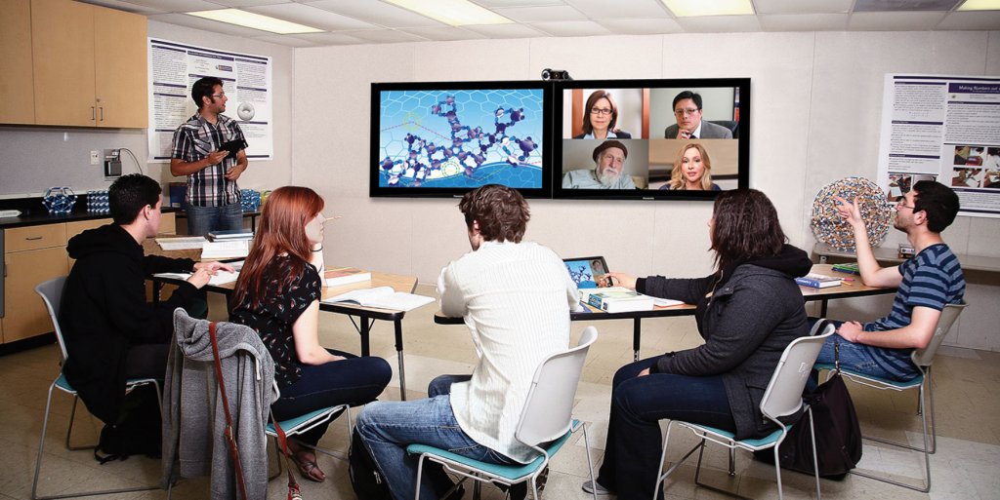

6.10 Conclusões



Não existe uma forma única de construir um ambiente de aprendizagem eficaz. O ambiente de aprendizagem deve ser adequado ao contexto no qual os estudantes aprenderão. No entanto, antes mesmo de começar a planejar uma disciplina ou programa, deveríamos refletir sobre como esse ambiente de aprendizagem poderia ser. Seja qual for o ambiente de aprendizagem, contudo, cabe aos aprendizes realizarem a aprendizagem. Necessitamos de garantir que os estudantes sejam capazes de trabalhar no âmbito de um ambiente que os ajude a fazê-lo. Em outras palavras, o nosso trabalho como professores consiste em criar as condições para o sucesso.
Um componente de um ambiente de aprendizagem eficaz que não discuti é o próprio professor (embora na Figura 6.9.2 você possa verificar que este se situa no centro do ambiente de aprendizagem). De certa forma, a importância de um professor ou instrutor no âmbito de um ambiente de aprendizagem constitui um dado adquirido, mas, na realidade, o resto do livro versa sobre o papel do professor neste ambiente. Além disso, ao concentrar-se nos outros componentes, este capítulo abre a possibilidade de um ambiente de aprendizagem sem um professor real, embora alguém, como um professor ou educador, ou mesmo um aluno individual (mas definitivamente não um cientista da computação), possa necessitar de ser responsável pelo planejamento e manutenção de tal ambiente de aprendizagem.
A tecnologia permite-nos hoje construir uma grande variedade de ambientes de aprendizagem eficazes, que podem diferir significativamente da sala de aula tradicional. Mas a tecnologia por si só não basta. Muitos ambientes de aprendizagem baseados na tecnologia carecem de alguns dos componentes fundamentais que tornam um ambiente de aprendizagem eficaz. Um ambiente de aprendizagem eficaz necessita de incluir os restantes componentes para o sucesso do estudante. Isto não significa que os aprendizes autogeridos não consigam construir os seus próprios ambientes de aprendizagem pessoais eficazes, mas necessitam de considerar os outros componentes, bem como a tecnologia.
Atividade 6.10 Projetando o seu próprio ambiente de aprendizagem
- Descreva o ambiente de aprendizagem atual em que ensina uma determinada disciplina ou programa.
- Quais são os principais componentes aos quais dedica maior atenção?
- Você faria alterações a esse ambiente de aprendizagem em resultado da leitura deste capítulo? Por quê?
- Agora: você consegue projetar um ambiente de aprendizagem completamente diferente que se adapte melhor às necessidades da disciplina e dos seus estudantes? Por exemplo, se transferisse a sua disciplina da sala de aula para o ambiente on-line, ou do ensino totalmente on-line para o ensino híbrido, de que forma acolheria os principais componentes deste ambiente de aprendizagem? Ou conseguiria redefinir o planejamento do ambiente de aprendizagem no âmbito da modalidade de ensino atual? Se sim, quais os elementos que alteraria e quais os que manteria?
Não forneço feedback para esta atividade. Serve para a sua própria reflexão.
Conclui-se assim a Parte 1 do livro, centrada nos fundamentos do ensino e da aprendizagem na era digital. A Parte 2 do livro (Capítulos 7 a 13) dedica especial atenção ao impacto das tecnologias digitais no ensino e na aprendizagem, começando com o Capítulo 7, que analisa a natureza e o papel das mídias e das tecnologias na educação.